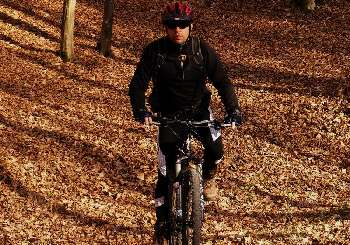
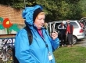

De-a lungul timpului au beneficiat de programul WeCare Financiar mai multi copii si adulti, precum si firme. De asemenea, de acest program au beneficiat si diversi Voluntari, prin programul Sprijin pentru Voluntari:
• Persoane fizice, copii si adulti:
• Persoane juridice:
• Voluntari:
 |
 |
|||
 |
||||